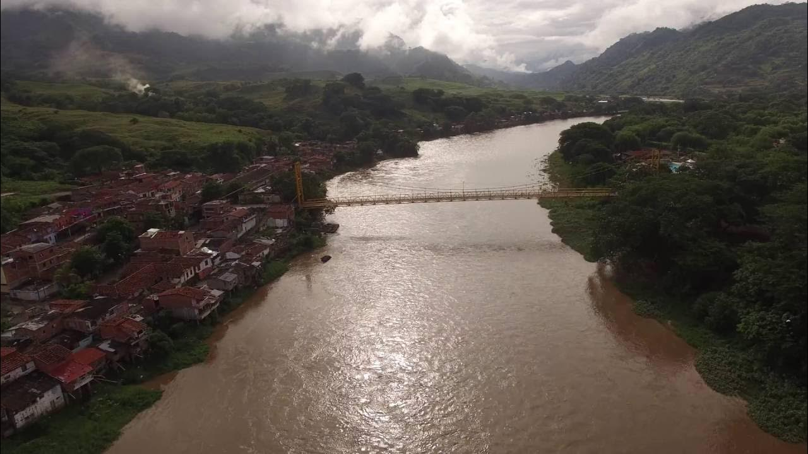
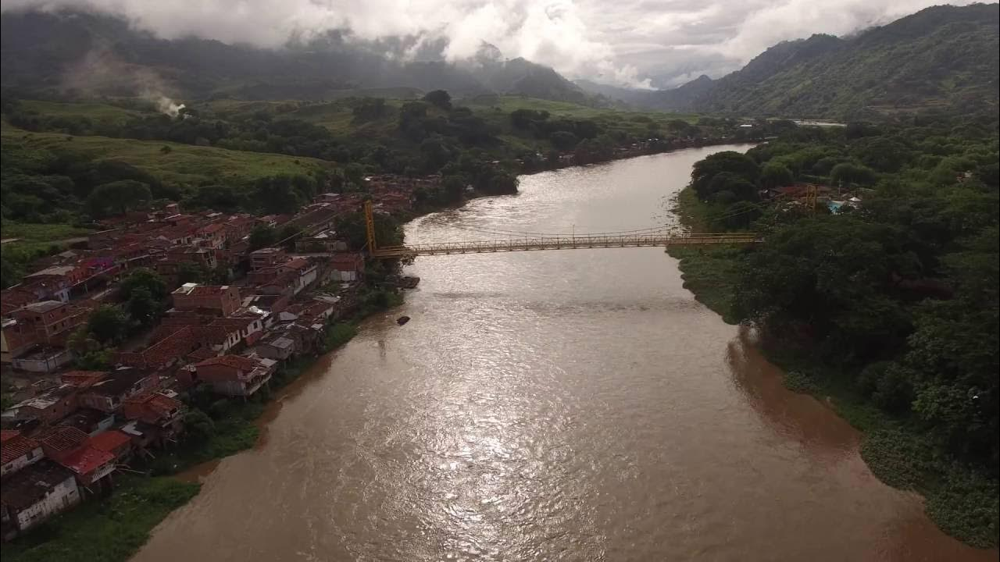
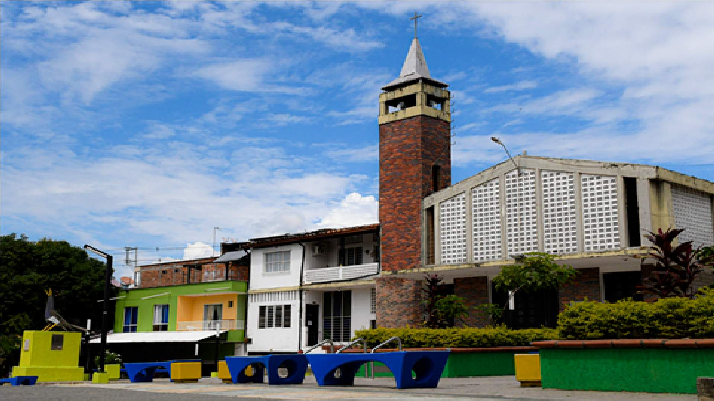
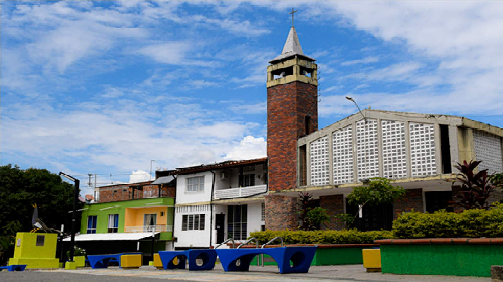
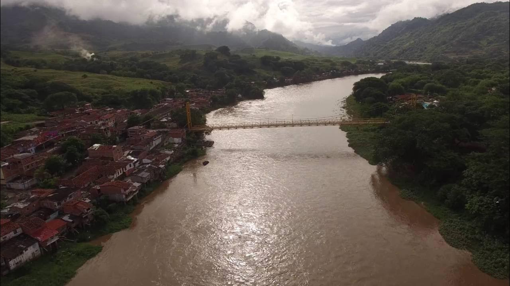
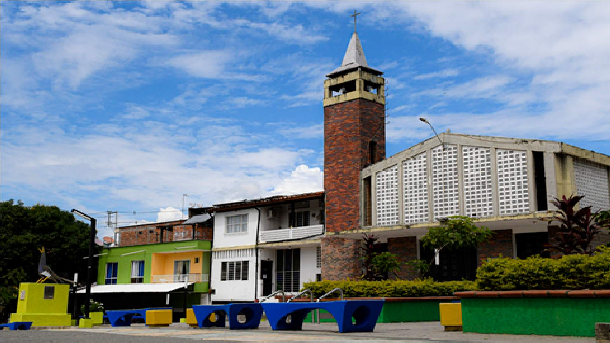

Galería
 

 

Reflejando el espíritu paisa en el Municipio de La Pintada
La Antioqueñidad es el alma de un pueblo forjado en las montañas de Antioquia, donde el verde de los cafetales y el blanco de la pureza se entrelazan en nuestra bandera. Es la celebración de nuestra independencia, conmemorado cada 11 de agosto, y un homenaje a la resiliencia de los paisas, quienes con trabajo arduo, ingenio y hospitalidad han construido una identidad única. Desde las trovas que resuenan en las fondas hasta los coloridos desfiles de silleteros en la Feria de las Flores, la Antioqueñidad es sinónimo de orgullo, tradición y comunidad.
En la "FIESTA DE LA ANTIOQUEÑIDAD INEM 2025", invitamos a las nuevas generaciones a redescubrir estas raíces a través de un evento vibrante que fusiona lo tradicional con lo moderno. Ven y vive la esencia de nuestra tierra, donde el aroma del café, la calidez de la gente y el eco de las montañas te harán sentir en casa.
La Pintada, joya del suroeste antioqueño a solo 79 km de Medellín, es un rincón de clima cálido donde el Río Cauca abraza la tierra con su majestuosidad. Con una altitud de 600 metros, este municipio fundado en 1867 es un reflejo de la Antioqueñidad: sus calles están impregnadas de historias de arrieros, sus fincas cafeteras exhalan el aroma del trabajo paisa, y sus paisajes naturales, como las piscinas de Los Farallones, invitan a la aventura y la contemplación. El Parque Principal, corazón del pueblo, late al ritmo de las fiestas populares, donde la trova, el fandango y el carriel son protagonistas.
En la "FIESTA DE LA ANTIOQUEÑIDAD INEM 2025", La Pintada se viste de gala para ser el epicentro de la celebración. Descubre sus encantos, desde los senderos junto al río hasta los sabores de la bandeja paisa y el café recién molido, en un evento que une pasado y presente en un abrazo antioqueño.
La "FIESTA DE LA ANTIOQUEÑIDAD INEM 2025" trae un programa lleno de vida y tradición para todas las edades. Sumérgete en la cultura paisa con actividades que celebran nuestra herencia y proyectan nuestra identidad hacia el futuro:
¡No te pierdas esta celebración única! Únete a la "FIESTA DE LA ANTIOQUEÑIDAD INEM 2025" y vive la pasión, el orgullo y la alegría de ser antioqueño.

